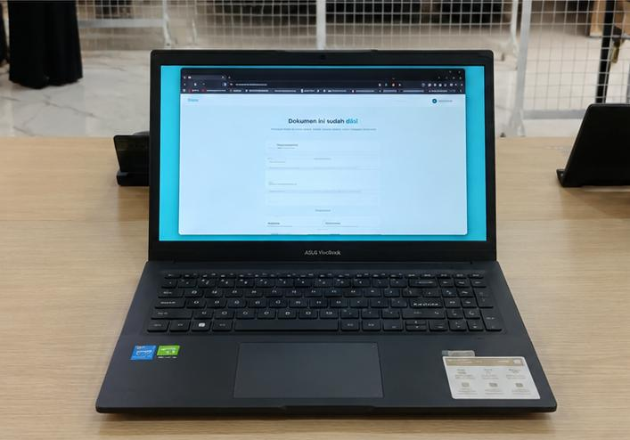
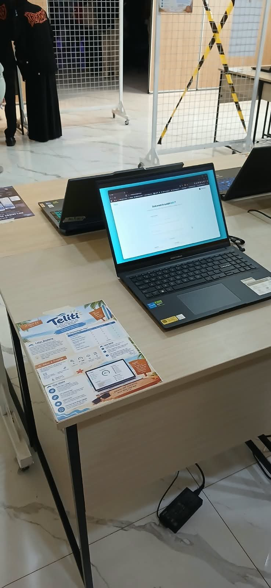

IT
Fest
EXPO
Kami membuat proyek acara IT fest yang mengenai Expo untuk menampilkan inovasi terbaru dalam dunia teknologi dan memperkenalkan invatif yang dibuat oleh para mahasiswa
Informatics Engineering project Exhibition
01 — 05
Jadipetani adalah platform digital berbasis website yang mendukung regenerasi petani Indonesia
dengan menghubungkan petani senior dan generasi muda. Fitur utamanya meliputi program magang,
job connector, kurikulum berbasis AI, dan komunitas. Model bisnisnya terdiri dari paket langganan
(50%), komisi layanan(30%), serta lisensi sekolah dan klinik (20%). Platform ini menggunakan React,
Tailwind CSS, Express.js, Prisma ORM, Postgresql, Gemini AI, dan midtrans untuk mendukung pertanian
yang lebih maju.

Teliti adalah platform web berbasis AI untuk deteksi bias (7 kategori) dan konsistensi argumen
dokumen akademik melalui fitur laporan lengkap, Integrity Score (0-100), dan document viewer dengan
highlight. Model bisnisnya menyediakan akses gratis penuh untuk mahasiswa guna memberikan keunggulan
kompetitif dibanding platform lain. Teknologi utamanya didukung oleh Gemini AI untuk menjalankan dua analisis
paralel secara instan dan akurat.

Kulakan adalah aplikasi manajemen bisnis perikanan yang memudahkan pengguna mengelola transaksi,stok,
dan penjualan hasil laut dalam satu platform. Fitur utamanya meliputi dashboard interaktif, pengelolaan
stok dan inventaris, pencatatan transaksi, peta lokasi nelayan dan pasar, serta laporan dan analisis berbasis AI.
Kulakukan membantu pelaku usaha perikanan memantau keuagan, mengelola persediaan, dan meningkatkan
efisiensi bisnis secara digital.

Titip adalah sistem cold staroge pintar berbasis AI dan IOT yang membantu menjaga kesegaran produk
pangan di pasar tradisional. Sistem ini dilengkapi sensor suhu kelembapan, dan gas untuk memantau
kondisi penyimpanan secara real-time, serta AI untuk memprediksi masa layak jual produk. Fitur utamanya
meliputi pemantauan melalui dashbord PWA, penyewaan loker pendingin, akses otomatis menggukana QR code,
dan pembayaran digital terintegrasi QRIS.

Paramaflood monitor adalah sistem pemantauan cuaca dan peringatan
dini banjir berbasis IOT dan AI, Sistem ini menggunakan sensor untuk
memantau kondisi lingkungan secara real-time, memprediksi potensi
banjir dengan teknologi LSTM, dan memberikan notifikasi dan rekomendasi keselamatan melalui aplikasi mobile flutter.

Add to CartThe Maren
Lounge Chair
Hand-upholstered in Oeko-Tex certified linen over a solid white oak frame. Each piece is numbered and made to order in our Copenhagen atelier.
- Material
- White Oak / Belgian Linen
- Dimensions
- W 78 × D 82 × H 74 cm
- Lead Time
- 6 — 8 Weeks
- Origin
- Copenhagen, Denmark
How each piece
comes to life
From raw material to your home — a journey of intention at every step.
Source
We begin with materials — FSC-certified hardwoods from managed Scandinavian forests, linens woven in Flanders, and leathers tanned with chestnut bark.
Design
Every piece starts as a 1:1 clay or foam maquette. We test proportions physically before a single line is drawn digitally.
Craft
Our Copenhagen atelier employs traditional joinery — no screws in the frame, no staples in the upholstery. Hand-tied eight-way springs for the seat.
Deliver
White-glove delivery with in-home placement. Each piece arrives in reusable linen wrapping, not cardboard. We take the packaging back.

The Quiet
Studio Film
A slow meditation on making — 4 minutes inside our Copenhagen workshop, filmed over 12 months.
Watch the FilmLet's create
something enduring
Whether it's a single chair or an entire interior — we'd love to hear what you're imagining. Consultations are always complimentary.
hello@ivoryflow.studio